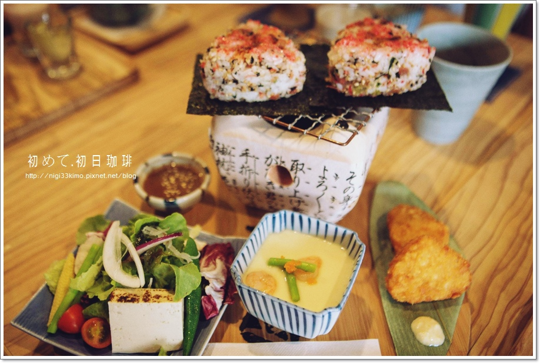

<thml>
<head>
<title>4</title>
</head>
<body>

<hl>【高雄】初日咖啡~初めて 日式早午餐.和食.手作甘味.珈琲</hl>

↓烤鮭魚飯糰$260（紅茶、咖啡、玄米茶、焙茶、可爾必思。五選一）<br>
這裡的日式早餐內容豐富，除了和風的生菜沙拉、蒸蛋、日式炸雞塊，<p>

一口咬下去，粒粒飽滿的熱飯粒在口中頓時化了開來，<br>
濃烈魚香也溢滿口中。<br>
尤其飯糰整整有2顆，一頓吃下來很滿足。<p>
<hr>



<p>

<a href="index.html">首頁</a>
<a href="2nd.html">第2頁</a>
<a href="3nd.html">第3頁</a>
<a href="5nd.html">第5頁</a>


</body>
</thml>